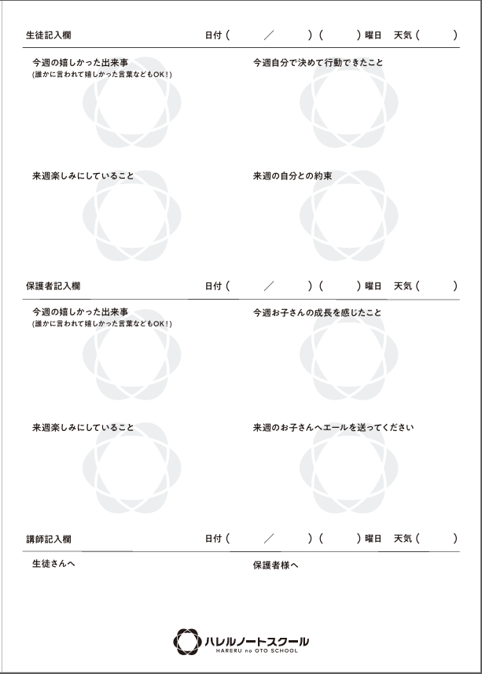
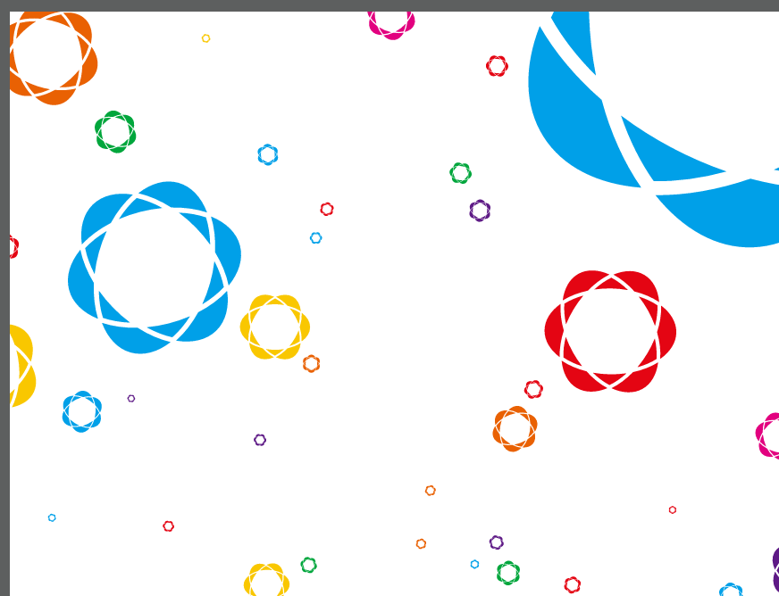

ハレルノートスクール Webサイト制作企画書
「自分で学べる力」と、教室の温度が伝わる公式サイトへ。
文書区分： 更新版 v1.1
作成日： 2026年9月2日
1. 企画概要
熊本市中央区神水の学習塾「ハレルノートスクール」の公式Webサイトを新規制作する。
現在はInstagramを中心に情報発信しているため、塾の特徴、指導内容、コース、料金、講師、教室情報が投稿ごとに分散している。初めて塾を知る保護者にとっても、短時間で全体像を理解でき、安心して相談できる公式の情報拠点をつくる。
今回の中心提案
合格実績の量を前面に出すのではなく、以下の価値を中心に伝える。
- 経験豊富な講師3名による直接指導
- 集団授業と自律学習指導を組み合わせた仕組み
- 各学年1クラスの定員制
- 生徒、保護者、講師をつなぐ「ハレルノート」
- 地域の学校生活や部活動も踏まえた丁寧な伴走
2. Webサイトの目的
| 目的 | 現状の課題 | Webサイトでの対応 |
|---|---|---|
| 信頼をつくる | 公式情報がInstagram中心で、初見では全体像を把握しにくい | 基本情報、講師、指導方針、教室写真を一か所に集約する |
| 違いを伝える | 集団塾・個別塾との違いが説明なしでは伝わりにくい | 指導の流れと自律学習の仕組みを短い図解で見せる |
| コースを理解してもらう | 学年や教科によって授業形式が異なる | 4つのコースに整理し、中1・2の2教科／5教科を比較表示する |
| 相談につなげる | 投稿閲覧から問い合わせまでの導線が分散している | LINEを第1導線、電話を第2導線として常に見つけやすくする |
制作方針
- スマートフォンを最優先に設計する
- 1画面につき1つの要点を基本とし、長文を避ける
- Instagramは日々の発信、Webサイトは変わりにくい基礎情報と役割を分ける
- 休校日や残席など、変動する情報を簡単に更新できる形にする
- 未確定情報を推測で公開せず、確認待ちとして管理する
3. ブランドと訴求の軸
塾名に込められた思い
塾名の出発点は、ジャズで使われる「ブルーノートスケール」。音階にない音を取り入れた独特の響きのように、通う子どもたち一人ひとりにも、誰かと同じではないオリジナルな人生を歩んでほしいという願いが込められている。
切ない響きではなく、明るく晴れやかな響きを表現するため、「晴れる音」から「ハレルノオト」、そして「ハレルノートスクール」と名付けられた。
ブランドの核
成績を上げる場所だけではなく、学ぶ方法を身につけ、自分で考え、自分で決めて進めるようになる場所。
伝えるべき強み
- 指導歴14～21年の講師3名が直接指導
- 集団授業の熱量と、自律学習指導の丁寧さを両立
- 各学年1クラスの完全定員制
- 後日チェックテストで「分かったつもり」を防ぐ
- ハレルノートを通じた生徒・保護者・講師の連携
キャッチコピー案
- 第一案： 学ぶ力が育てば、未来はもっと晴れていく。
- 第二案： 教わるだけで終わらない。自分で学べる子を育てる塾。
- 説明文案： 集団授業の熱量と、一人ひとりへの丁寧な伴走を。
教育方針（打ち合わせ音声から整理）
私たちが育てたいのは、教えてもらったときだけ解ける子ではなく、自分で目標を決め、準備し、試し、振り返り、次の行動を選べる子です。授業や動画を受け身で終わらせず、講師との対話やチェックテスト、ハレルノートを通して、一人ひとりの「学ぶ力」と「自己決定力」を育てます。
教育方針は、次の5点を軸にWebサイトへ掲載する。
- 学ぶ力と自己決定力を育てる — 目標と振り返りを自分の言葉で記録し、次にすることを自分で選べるようにする
- 授業を受けただけで終わらせない — 宿題で準備し、授業とは別の日のチェックテストで本当に身についたか確かめる
- 教材や動画だけに任せない — 講師が途中で問いかけ、「何を考えたか」「説明をどう捉えたか」まで確認する
- 合格校の名前より、一人ひとりの伸びを見る — 大人数の合格実績ではなく、本人がどれだけ成長したかを大切にする
- 学校生活と両立できる学び方をつくる — 部活動なども踏まえ、学ぶ時間を柔軟に設計する
打ち合わせでは、中学3年生12名が夏期期間に250点満点の平均で約40点伸びた例も語られた。公開時は、対象年度・テスト名・母数・集計方法を確認できた数値のみ掲載する。
※上記は音声の逐語録ではなく、発言内容をWeb掲載向けに編集した案。最終公開前に講師確認を行う。
4. 想定する閲覧者
| 対象 | 知りたいこと | 安心につながる情報 |
|---|---|---|
| 小学生の保護者 | 学習習慣が身につくか、中学準備になるか | 個別学習の流れ、全国模試、ハレルノート |
| 中学1・2年生の保護者 | 2教科と5教科の違い、部活との両立 | 比較表、時間の使い方、自律学習の進捗管理 |
| 中学3年生の保護者・生徒 | 受験に向けた対応範囲、年間の流れ | 5教科指導、入試特訓、模試、季節講習 |
| 高校生・保護者 | 自習だけとの違い、質問対応 | 定期面談、学習計画、数学・物理の個人授業 |
保護者が探す順番を想定し、特徴 → コース → 料金 → 講師 → 教室 → よくある質問 → アクセス → LINE相談の順で情報を整理する。
5. コース構成
Webサイトでは次の4区分を基本とする。
| コース | 対象・形式 | 教科・内容 | 見せ方の要点 |
|---|---|---|---|
| 小学生 | 小学4～6年生・個別学習 | 算数・国語・英語から選択 | 学習の型と中学準備を伝える |
| 中学1・2年生 | 集団授業＋自律学習 | 2教科または5教科 | 2教科／5教科を比較表示する |
| 中学3年生 | 集団授業＋自律学習＋入試対策 | 5教科 | 年間の受験対応を時系列で見せる |
| 高校生 | 自律学習＋定期面談 | 必要に応じて数学・物理を追加 | 一般的な自習室との違いを明確にする |
中学1・2年生：2教科と5教科
| 項目 | 2教科コース | 5教科コース |
|---|---|---|
| 教科 | 数学・英語 | 数学・英語・国語・理科・社会 |
| 形式 | 数学・英語の集団授業 | 数学・英語の集団授業＋国理社の自律学習 |
| 授業量 | 週4コマ×3週間 | 週7コマ×3週間 |
| 月額授業料 | 18,700円 | 23,100円 |
表現上の注意： 「2教科／5教科」の選択が明記されているのは中学1・2年生のみ。全コース共通の選択肢に見える表現は避ける。
料金掲載方針
- 2026年度パンフレット4種を原資料とし、各コースの月額授業料を分かりやすく掲載する
- 入塾金を掲載する
- 教材費、模試代、季節講習費は変動可能性が高いため掲載しない
- 兄弟姉妹割引と転塾割引を掲載する
- 友人紹介制度は塾内で案内し、Webサイトには掲載しない
- 掲載外の費用がある場合は、金額を推測せず「詳細はLINEでご案内します」等の補足を付ける
- 税込・税別表記と詳しい料金説明は、原資料の確認後に確定する
6. 指導の仕組み
数学・英語の基本サイクル
- 教える： 新しい内容の要点を説明
- 自分で解く： 演習を通して理解を定着
- 別日にチェック： 授業直後ではなく、準備してテストに臨む
- 復習・再テスト： 未定着のまま残さない
授業直後ではなく日をまたいで確認することで、「覚える → 準備する → 試す」という学習方法そのものを身につける。
国語・理科・社会の自律学習
- 3週間単位で「いつまでに、どこまで終えるか」を設定
- 講師が進捗を確認し、必要に応じて質問対応
- 期限内の到達が難しい場合は、別日程で呼び出し指導
ハレルノート

- 生徒： できたこと、次週の目標を記入
- 保護者： 成長を感じたことや応援メッセージを記入
- 講師： 本人・保護者へのフィードバックを記入
専門用語を並べるのではなく、矢印図、短い説明、実物写真を使い、入塾後の学び方を想像できるようにする。
7. サイト構成案
初回公開は、次の固定5ページを必須とする。各コースの対象・指導方法・教科・料金・時間割を一つのページ内で完結させる。
| 必須ページ | 主な内容 | 役割 |
|---|---|---|
| 1. トップページ | 教育方針、4コース、講師、教室・アクセス、FAQ、LINE導線 | 全体像と信頼材料をまとめて伝える |
| 2. 小学生 | 小4～6、指導方法、教科、料金、時間割 | 小学生コースを判断してもらう |
| 3. 中学1・2年生 | 2教科／5教科比較、指導サイクル、料金、時間割 | 選択肢と両立方法を明確にする |
| 4. 中学3年生 | 5教科、入試対策、年間の流れ、料金、時間割 | 受験対応の全体像を伝える |
| 5. 高校生 | 自律学習、面談、追加授業、料金 | 一般的な自習室との違いを伝える |
新着情報は固定ページ数に含めず、WordPressが一覧（/news/）と詳細（/news/{slug}/）を生成する。トップには最新3〜5件と「一覧を見る」を表示する。プライバシーポリシーと404ページも別途設ける。FAQはトップページ内だけに掲載し、各コースページには掲載しない。教育方針は初期段階ではトップに掲載し、文章量が増える場合は「教育方針・ハレルノート」を第6ページとして独立させる。
8. トップページの構成
- ファーストビュー — 短いコピー、生徒の自然な笑顔が伝わる動画、LINE相談
- この塾について — 自分で学べる力を育てるという約束
- 4つのコース — 小学生、中1・2、中3、高校生
- 指導の特徴 — 教える → 学ぶ → チェック → やり直す
- ハレルノート — 生徒・保護者・講師の連携
- 講師紹介 — 3名の経歴、担当、教育観
- 教室・通塾情報 — 写真、アクセス、自習、振替
- よくある質問 — よくある不安に先回り
- LINE相談 — 無料体験・個別相談への最終導線
トップ上部に最新のお知らせを3〜5件表示し、「一覧を見る」から全記事一覧へ、記事タイトルから詳細ページへ移動できるようにする。
ヒーロー動画の運用
- 本番動画は、生徒本人・保護者からWeb掲載許可を取得した素材だけを使用する
- 本番素材が揃うまでは、無人の外観・教室・自習室で構成した仮動画を使用する
- 生徒の笑顔を含む構図確認にはAI生成の仮画像を使用できるが、在籍生徒の実写として公開しない
- 動画にはポスター画像を用意し、通信環境や動きを抑える設定では静止画を表示する
残席表示
学年ごとの「定員・在籍・残席」を管理画面の数字欄から更新できるようにする。更新日も自動表示し、古い数字に見えないようにする。運用負担が大きい場合は、受付中／残席わずか／要相談の3段階へ切り替えられる設計とする。
9. デザイン方針
親しみやすいが幼すぎず、塾として信頼でき、情報を探さなくてよいサイト。
ハレルノート独自の表現
- ロゴのブルーを主色とし、白と淡い水色で明るく清潔にする
- 本文・見出しは濃いネイビーを基本とする
- 日本語フォントはNoto Sans JPを使用し、サイズ・太さ・余白で情報階層を表す
- 強い差し色は残席・注意表示など、意味を持つ箇所だけに使用する
- 「晴れる音」を感じる、軽やかなリズムと丸みを取り入れる
- ノートの罫線やページの重なりをごく控えめなモチーフにする
- ロゴマーク背景は小学生ページや区切り部分に限定して使う
- 教室と講師の実写を中心にし、素材写真に頼りすぎない
- 講師3名の顔写真を掲載する
- 生徒・保護者の声は掲載許可を取得できた実際の回答だけを公開する
- 動きはヒーロー動画と控えめなフェードに限定し、派手なスクロール演出は使用しない

参考サイト
| 参考サイト | 参考にする点 | 距離を取る点 |
|---|---|---|
| まつがく | 学年別の入口、特徴の整理、LINEへの明確な導線 | 多校舎向けの情報量、合格実績中心の見せ方 |
| 探究学舎 | 教育観を冒頭で伝える、写真と短文で世界観をつくる | 実態以上の派手な演出、動画中心の構成 |
| なるほどゼミナール | 小中高の分類、順番に理解できるシンプルな構成 | 県内競合のため、配色・書体・図解・配置・コピーを踏襲しない |
なるほどゼミナールからは「分かりやすさ」という設計原則だけを参考にし、視覚表現はハレルノートのロゴ、教室写真、塾名の物語から独自に構築する。
10. 講師・安心情報
講師紹介
| 講師 | 経歴 | 指導歴 | 担当科目 |
|---|---|---|---|
| 許斐 春輝 | 熊本大学工学部卒 | 21年 | 数学・国語 |
| 宮西 孝宗 | 鹿児島大学工学部卒 | 15年 | 理科・英語 |
| 上瀧 悠亮 | 下関市立大学経済学部卒 | 14年 | 社会・英語 |
通塾後の安心材料
| 項目 | 内容 |
|---|---|
| 営業時間 | 平日14:00～22:00、土曜日13:00～20:00 |
| 欠席時振替 | あり。ただし無断欠席を除く |
| 自習室 | 開講中は条件なしで利用可能 |
| 保護者面談 | 年3回：6月・11月・2月 |
| 学習報告 | 面談時に詳細共有。必要に応じて公式LINEから報告 |
| 駐輪・駐車 | ともにあり。駐車場は保護者が自由に使える運用ではないため、案内文を要確認 |
合格実績は主訴求にせず、公開する場合も「成績の伸び」「学習習慣の変化」「本人・保護者の声」を中心に構成する。
11. アクセス・問い合わせ
| 項目 | 確定情報 |
|---|---|
| 所在地 | 熊本市中央区神水1丁目17-15 光永テナント2F |
| 市電 | 神水交差点から徒歩2分、八丁馬場から徒歩3分 |
| バス | 神水町から徒歩1分 |
| LINE | @010kjkss／友だち追加 |
| 電話 | 096-283-2100 |
| @hareru_no_oto.school | |
| 運営者 | ハレルノートスクール |
| 代表者 | 許斐 春輝 |
| プライバシー問い合わせ | 電話 096-283-2100 |
第1導線はLINE、第2導線は電話とする。LINEは「入塾を決めていなくても相談可能」と分かる柔らかい表現にする。
Googleマップの地図表示はアクセス案内として利用できるが、Googleマップの口コミ投稿を促す導線は今回の制作範囲に含めない。
Instagramは投稿一覧を埋め込まず、公式アカウントへのリンクのみ設置する。Google広告は公開後に実施する想定とし、初期公開時は計測基盤を整えるが広告配信そのものは制作範囲に含めない。
ボタン文言案
- LINEで無料体験・相談する
- まずは教室について聞いてみる
- 電話で問い合わせる
- Instagramで教室の日常を見る
12. システム・機能要件
採用方針
公開サイトと更新基盤にはWordPressを採用する。 制作・改修はCodexで行い、GitHubで変更履歴を管理したうえでWordPressへ反映する。デザイン検討には必要に応じてFigmaを使う。
Elementor等のページビルダーは使用せず、専用テーマを制作する。塾側はWordPress標準の編集画面から新着情報を投稿し、固定ページのレイアウトは変更しない運用とする。
制作・反映フロー
Codexで制作・修正 → GitHubへ保存 → テスト環境のWordPressへ反映 → 確認後に本番WordPressへ手動反映
本番サイトをCodexから直接変更せず、GitHubに確定した制作データと変更履歴を残す。公開後の日常的な新着情報は、この制作フローを通さず、塾側がWordPress管理画面から追加する。
| 選択肢 | 役割 | 今回の評価 |
|---|---|---|
| WordPress | サイト公開、記事管理、残席更新、権限管理 | 推奨。 塾側が管理画面から継続更新しやすい |
| Figma | 画面デザイン、スマホ表示の確認、制作前の合意 | デザイン用途に有効。Figma SitesにもCMSはあるが、今回は日常運用の分かりやすさと保守の一般性を優先する |
| 独自システム | 個別仕様を一から開発 | 今回は不要。費用・操作・保守が複雑になるため採用しない |
WordPressには記事の作成・編集・分類と、運用者ごとの権限設定が標準で用意されている。固定レイアウトと専用入力欄を組み合わせ、塾側がデザインを崩さずに更新できる構成にする。
塾側で更新するもの
| 更新対象 | 操作方法 | 必須項目 |
|---|---|---|
| 新着情報 | WordPress管理画面の「新着情報 → 新規追加」から入力して公開 | タイトル、本文、公開日、カテゴリ、任意の画像 |
| 残席数 | 学年別の数字欄を書き換えて保存 | 定員、在籍、残席、受付状態 |
| 休校日・年間予定 | カレンダー画像またはPDFを差し替え | 対象期間、更新日、添付ファイル |
新着情報の投稿・更新担当は塾側とする。カテゴリは、初期値として「お知らせ」「募集状況」「講習」「休校・日程」を設定する。コメント機能は使わない。更新担当者には記事投稿に必要な権限のみを付与し、テーマやプラグインの変更権限は持たせない。
必須機能
- 5つの固定ページと、お知らせ一覧・詳細
- トップページへの最新ニュース自動表示
- 学年別残席表示と更新日表示
- LINEを第1、電話を第2とする問い合わせ導線
- Instagramリンク、アクセス地図、営業時間表示
- スマートフォン対応、基本的な検索対策、SNS共有時の表示設定
- バックアップ、セキュリティ更新、迷惑アクセス対策
- 管理者と更新担当者の権限分離
更新画面の設計原則
- 日常更新に不要なメニューは更新担当者から隠す
- ページを自由配置する方式ではなく、決められた入力欄へ文章・数字・画像を入れる方式にする
- 公開前プレビューと下書き保存を使えるようにする
- 納品時に、画像付きの簡易操作マニュアルと更新練習を用意する
- WordPress本体・テーマ・プラグインの保守担当と費用は、公開前に決める
参考：WordPress公式「投稿管理」では投稿の作成・編集・分類、WordPress公式「権限」では管理者・編集者などの役割分けが案内されている。Figma公式「Sites CMS」にも記事管理機能はあるが、公開機能は2025年にオープンベータとして開始されたため、本件ではWordPressを安定運用の第一候補とする。
13. SEO要件
基本方針
SEOは検索順位だけを目的とせず、熊本市中央区・神水周辺で、小学生・中学生・高校生の塾を探す保護者が、必要なページへ直接たどり着ける状態をつくる。
- 地域軸：熊本市中央区、神水、神水交差点、八丁馬場
- 対象軸：小学生、中学1・2年生、中学3年生、高校生
- ニーズ軸：学習習慣、部活との両立、高校受験、自習環境、5教科指導
- ブランド軸：ハレルノートスクール、学ぶ力、自己決定力
これらは文章として自然に必要な場所へ使用し、検索語句の不自然な反復や、実態のない地域名・サービス名の追加は行わない。公開後はGoogle Search Consoleの実データを基に見直す。
ページごとの検索意図
| ページ | 主な検索意図 | title案 |
|---|---|---|
| トップ | 熊本市中央区・神水で塾を探している | 熊本市中央区神水の学習塾｜ハレルノートスクール |
| 小学生 | 神水周辺で小学生向けの塾を探している | 小学生コース｜熊本市中央区神水のハレルノートスクール |
| 中学1・2年生 | 2教科／5教科、部活と両立できる塾を比較している | 中学1・2年生コース｜2教科・5教科｜ハレルノートスクール |
| 中学3年生 | 熊本で高校受験・5教科指導の塾を探している | 中学3年生・高校受験コース｜熊本市中央区神水の学習塾 |
| 高校生 | 神水周辺で高校生の学習環境・自習室を探している | 高校生コース｜自律学習と個別サポート｜ハレルノートスクール |
titleと見出しはページごとに固有にし、内容を正確かつ簡潔に表す。meta descriptionも各ページの内容に合わせて個別作成する。最終文言は料金・時間割・指導内容の確定後に調整する。
コンテンツ要件
- 各コースページに、対象学年、教科、指導形式、時間割、料金、よくある質問、LINE導線を掲載する
- トップページに、所在地、営業時間、電話番号、最寄り駅・バス停をテキストで明記する
- 教育方針を抽象的な理念だけで終わらせず、チェックテストやハレルノートなど実際の取り組みで説明する
- 教室・講師写真には内容を説明する代替テキストを設定する
- 新着情報は塾側が更新し、募集状況、講習、休校・日程など検索者に必要な一次情報を蓄積する
- 同じ文章を複数ページへ大量に複製しない
技術要件
- ページごとに固有のtitle、meta description、H1を設定
- 読みやすいURLを設定（例：
/elementary/、/junior-high-1-2/） - canonical URLを設定し、同一内容の重複登録を防止
- XMLサイトマップをWordPressで自動生成し、Google Search Consoleへ登録
robots.txtを設定し、テスト環境はnoindex、本番公開時に解除- パンくずリストと内部リンクを設置
LocalBusiness構造化データに塾名、住所、電話、営業時間、URL、ロゴ、Instagramを設定- 構造化データは公開前にリッチリザルトテストで確認
- スマートフォン表示、画像容量、表示速度、レイアウトの安定性を確認
- HTTPS、404ページ、転送設定を整備
Googleサービスの設定
採用ドメイン： harerunote.com（取得手続き待ち）
harerunote.com取得・公開後、Google Search Consoleで所有権を確認する- XMLサイトマップを登録する
- 公開した5ページをURL検査で確認する
- Googleビジネスプロフィールの塾名、住所、電話、営業時間、サイトURLを公式サイトと一致させる
- 月1回、表示回数、クリック数、検索語句、掲載ページ、インデックス状況を確認する
Googleのローカル検索は関連性、距離、知名度などを基に表示されるため、順位は保証しない。Googleマップの口コミ投稿を促す導線は今回の対象外とする。
公開時のAcceptance Criteria
- 5ページすべてに固有のtitle、meta description、H1がある
- 住所・電話・営業時間がサイト内とGoogleビジネスプロフィールで一致している
- サイトマップが生成され、Search Consoleから読み取れる
- テスト環境の
noindexが本番サイトから取り除かれている - 構造化データに重大なエラーがない
- スマートフォンで主要コンテンツとLINE導線を利用できる
- 主要画像に適切な代替テキストがある
- 存在しないページが適切な404を返す
参考：Google SEOスターターガイド、ローカルビジネス構造化データ、サイトマップの作成と送信、Googleビジネスプロフィールのローカル検索
14. 必要素材と確認事項
すでに揃っているもの
- ロゴおよびロゴマーク画像
- ロゴマークを使用した背景デザイン
- 4コースの2026年度パンフレット
- ハレルノート未記入用紙の画像
- LINE・InstagramのQRとリンク
- 営業時間、アクセス、講師経歴、定員・残席情報
追加で必要なもの
| 優先度 | 素材・回答 | 理由 |
|---|---|---|
| 高 | 透過PNGまたはSVGの正式ロゴ | 色付き背景やヘッダーで綺麗に表示するため |
| 高 | 教室外観、入口、教室内、自習席の写真 | 初めての保護者の不安を減らすため |
| 高 | 講師3名のプロフィール写真と短い教育観 | 人への信頼をつくるため |
| 高 | 年間カレンダー、休校日データ | 授業日・休校日の誤解を防ぐため |
| 中 | 小学生料金表の正式なコース名と組み合わせ | 現在の原資料だけでは料金行との対応を確定できないため |
| 中 | 駐車場の利用ルールと案内文 | 「駐車場あり」の誤解を避けるため |
| 中 | 生徒・保護者の声と掲載許諾 | 第三者評価を追加するため |
| 中 | 許諾済みの生徒動画 | 仮動画から本番動画へ差し替えるため |
15. 制作の進め方
| 段階 | 内容 | 主な確認物 |
|---|---|---|
| 1. 情報確定 | 未確定事項と素材を回収 | 料金、時間割、カレンダー、写真 |
| 2. 構成設計 | ページ構成と文章の優先順位を確定 | サイトマップ、トップ構成 |
| 3. デザイン | スマホ基準で主要画面を作成 | トップ、コース、問い合わせ |
| 4. 実装 | 表示・更新・問い合わせ機能を構築 | テストサイト |
| 5. 確認・公開 | 文章、リンク、スマホ表示を最終確認 | 公開版サイト |
次回打ち合わせで決めたいこと
- 音声から整理した教育方針の文章を、この表現で公開してよいか
- パンフレット料金の税込・税別表記と、入塾金の正式金額
- 写真・動画撮影の対象、許諾方法、日程
- WordPressの保守担当、保守費用、更新担当者のアカウント
harerunote.comの取得事業者、契約名義、更新管理者- Google Search ConsoleとGoogleビジネスプロフィールの管理アカウント
本書は、サイト制作の方向性をそろえるための初稿です。制作費、公開日、保守範囲は、ページ数・更新方法・必要機能の合意後に別途確定します。
調査・確認元： 公式Instagram、2026年度パンフレット4種、2026年9月1日打ち合わせ音声・文字起こし、提供された参考サイト、WordPress公式ドキュメント、Figma公式ヘルプ